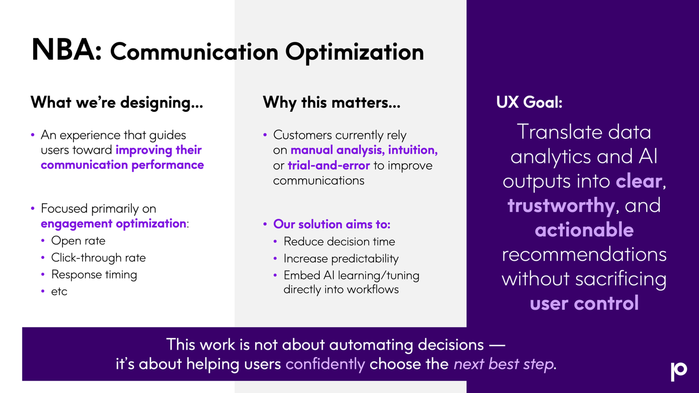
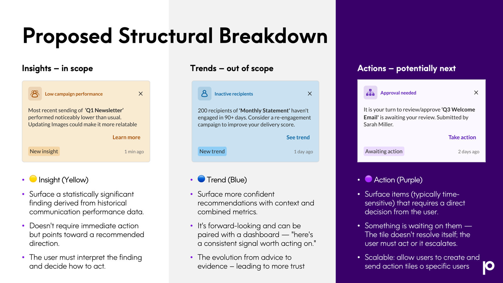

Case Study 02 · AI / UX Governance
An engineering-led AI recommendation engine where I fought to protect user control and design integrity. Publicly announced by Precisely in April 2026, with the MVP still taking shape.
The Problem
Users managing customer communications have to manually piece together engagement signals - open rates, click rates, delivery performance - across scattered dashboards to figure out what to change and why. The process is slow, inconsistent, and reactive. Teams rely on trial-and-error and intuition rather than any repeatable way to translate performance data into action.
Framing the Work
Early in the project, I helped the team align on a core framing - "AI tells you what to do next," not "AI does it for you" - and held that line throughout, even as the team made descoping decisions. Recommendations are advisory only. Users decide what to act on. Nothing executes automatically on a user's behalf, the same reasoning behind the AI Writing agents: our clients operate in highly regulated industries, and some are averse to AI acting on their behalf at all.
Machine learning models need a data-collection window before they can learn and make reliable inferences. I advocated early for a dedicated low-data, cold-start state, and pushed to make sure the system's confidence level was always clearly articulated to the user. Getting the confidence story right mattered as much as getting the recommendation right.
The Experience
Opening and closing the panel (empty and filled state)
On the homepage, a link below the status message reads "Review Next Best Action." Before there's enough data to say anything statistically meaningful, the panel shows one of seven rotating, reassuring messages instead of insights, so the empty state doesn't read as stuck or broken during the wait. A notification dot appears next to it whenever new recommendations are ready, and clears once the panel is opened, so users know something's new without having to check. Clicking the link opens the panel and swaps its own copy to "Hide Next Best Action"; a dedicated icon on the upper right of the panel can also be used to close it.
Each insight recommendation is a tile: a short, LLM-generated description, a "Learn more" link, and a close (X) to clear it. Clearing is a soft delete with an audit trail. For MVP, cleared tiles can't be retrieved from the UI, a known limitation I flagged rather than hid. Tiles arrive in nightly batches, sorted newest-batch-first and then by statistical significance within the batch. A new tile carries a "New Insight" chip until it's opened, then switches to a plain "Insight" chip.
Viewing more details and providing feedback
Clicking "Learn more" opens a dialog window, deliberately not a modal and not a new tab. A modal will take the primary focus of the screen, blacking out the content below it, and disappear the moment a user navigated away, retrievable only back on the homepage. A new tab breaks context and forces manual switching. A dialog window stays persistent across navigation and can be repositioned. The choice to build it in JSP rather than Angular was deliberate: it lets the window stay open on every page, mitigating the risk created by the homepage-only decision below. It's also a symptom of a bigger pattern this project kept running into: the platform's Angular transition wasn't finished, but delivery pressure meant shipping around that gap instead of waiting for it to close.
Inside, the dialog echoes the tile's content so nothing is lost, then shows the real data behind it: the analysis period, how many communications were analyzed, the baseline, the current value, and the change. Below that, an LLM-generated "What the Data Shows" section states the finding, what it means, and a suggested action. A feedback control lets users rate the insight; if they thumb it down and give a reason, the tile clears itself automatically, so disliking a recommendation doesn't require a second action to dismiss it.
Process
I ran this project through a sequence of cross-functional sessions, each one narrowing scope and building shared understanding before the next. Below are the three that mattered most: the initial design review, the insights workshop and the initial design framework handoff.

Explaining what we're building and why
Initial UX Design Review (March 24)
This was my first formal design review on NBA. By that point, the project had accumulated months of conversation without ever reaching real alignment; people held genuinely different mental models of what NBA was supposed to be. My goal for this session was to put everything on the table and drive a shared, explicit understanding before design work began. It worked: the engineer who'd been on the feature since January later told me he'd gotten more clarity from that one session than from the rest of the project combined.
Presenting the Microsoft Teams case study
Insights Workshop (April 14)
I designed and facilitated a cross-functional workshop (with a UX designer co-facilitating) to align stakeholders on scope and define the MVP. To make an abstract principle land with a room of engineers and stakeholders, I used a real, self-sourced case study - the early, trust-damaging rollout of Microsoft Teams meeting transcripts - to show that good technology can still fail to earn adoption if it isn't designed for trust. It reframed the conversation from whether the model was accurate enough to whether people would actually use it.

Aligning on Insights, Trends, and Actions terminology
Initial Design Framework (May 1)
I proposed a clear split between three tile types. Insights surface a statistically significant finding from historical data; they don't require action, they point toward one, and the user interprets and decides. Trends would look forward, pairing context with combined metrics to move from advice toward evidence. Actions would be time-sensitive and require a direct decision, escalating if ignored, with room to eventually route specific action tiles to specific users. Only Insights made MVP scope. Without this split, "recommendation" meant something different in every conversation.
Real Tensions, Navigated in Real Time
A scope cut, and making its cost visible
A technical platform constraint (the Angular UI couldn't embed into the platform's older JSP pages) forced a pivot from an all-pages floating panel down to a homepage-only placement for MVP. The floating panel had been designed to open from a persistent sparkles icon in the nav bar - itself intended as the entry point for a future global AI assistant. That icon was removed, and a text link on the homepage took its place. Rather than let that read as a routine scope trim, I documented the real cost, and built the Learn More dialog in JSP specifically so it could still reach every page even though the panel couldn't.
Documenting risk under a rushed pivot
A designer on my team (focused on accessibility) caught that the notification dot lost contrast when it moved from the dark navigation bar to a lighter page background during the pivot. I documented it as another point against the homepage-only decision, strengthening the case for prioritizing the panel's move back into the global nav. Quick pivots rarely leave room to resolve every risk before shipping. Documenting them clearly is what keeps them visible for future prioritization.
Catching a regression, and getting it fixed
Early in the MVP build, dismissal state was shared across every user in a tenant, meaning one person clearing a tile silently removed it for everyone else. That directly contradicted an earlier team alignment that each user should control their own view. I flagged it explicitly rather than letting a technical shortcut quietly override a commitment we'd already made, and in a later sprint, the team shipped the fix: clearing is now scoped per user.
Rejecting numbers that mislead
During an early data review, one tile reported a "100% worse open rate" for failed deliveries, technically accurate, but circular, since a communication that never delivered was never going to be opened in the first place. I brought that circular logic to engineering's attention, and they began pulling metrics that didn't hold up under scrutiny. Separately, a real lift number tested badly in raw percentage form; a 348% increase in click rate reads as alarming rather than informative. I'm now working through clearer framings, such as expressing it as a multiple of clicks gained, to make a true statistic actually legible to the person reading it.
Obtaining feedback
I planned and executed a feedback session on the Learn More dialog with the Director of Sales Engineering. Several decisions held up under real use: the homepage entry point was still easy to find even after the nav icon was removed, the close icon was instinctively understood without instruction, the data section read as simple and clear, and the chip change from "New Insight" to "Insight" correctly communicated that a tile had been reviewed. The feedback mechanism's auto-clear was specifically called out as removing an extra step for the user, and keeping the dialog open after rating was confirmed as the right call, since people were often still working through the data.
This session confirmed the context awareness gap I'd been flagging. During the Insights Workshop, a data scientist on the AI Labs team also raised this concern: without knowing which type of communication a recommendation applies to, blanket advice risks not holding up across every email type. Engineering held the MVP scope as non-context-aware, and I documented the expected impact on value at the time. This feedback session showed that impact playing out as anticipated. It underscored a broader lesson: on an engineering-led feature, scoping decisions need a more consistent channel back to product and sales stakeholders, so tradeoffs like this one are visible before they surface in front of a customer-facing team.
Presenting the Work
Presenting progress in a cross-functional sprint review
When presenting at sprint reviews, I make sure to recap the feature's goals, walk through updates since the last review, and set up a clean handoff so engineering can run the live demo. In a recent sprint review, I covered two real wins: per-user dismissal and the new feedback mechanism. I then walked through the current MVP scoping decisions in full: panel placement, recommendation types, batch cadence, and sort order, along with the tradeoff behind each one. Being honest about what's in scope, what's been cut, and why, wins and gaps both, is what makes these reviews useful to product and leadership, not just a status update.
Current Status
Precisely publicly announced the Next Best Action AI Agent on April 22, 2026, as part of the latest EngageOne RapidCX release. The MVP is functional and has been demoed internally on test data, but the panel remains homepage-only, Insights are the only tile type in scope, and the template-level actionability gap surfaced in testing is still open. What I can speak to directly is the process: holding a governance line, flagging real tradeoffs, and getting real fixes shipped, through a project that kept moving under real technical and organizational pressure.